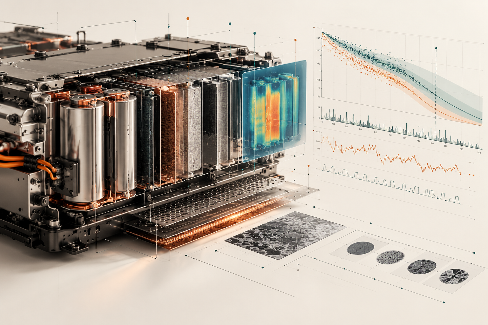
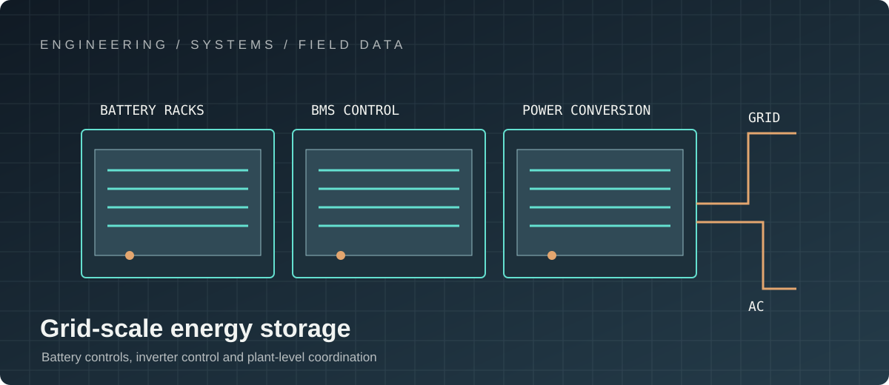

PROJECT 02 / ENERGY STORAGE
Battery Energy Storage Systems
Battery modelling, health estimation and embedded algorithms for real energy systems.

My contribution: BMS firmware
I connect cell characterisation and model identification to embedded estimation and system-level validation. My work spans equivalent-circuit modelling, HPPC-derived parameterisation, state estimation, diagnostics and the constraints of production firmware. I pay particular attention to observability across the flat LFP OCV region, numerical robustness, temperature-dependent parameters, calibration strategy and deterministic execution on resource-constrained MCUs.

My contribution: inverter firmware
I approach the inverter as part of a tightly coupled electrochemical and power-electronic system. My focus is the control and state architecture around operating modes, measurement and protection paths, control loops, communications, fault response and transitions between grid-connected and constrained states.
I help make interfaces between BMS, inverter control and plant-level functions explicit, including event timing, state transitions, fault reactions, telemetry and service diagnostics. This provides a basis for integration and verification across asynchronous events, degraded operation and grid-facing behaviour.
My role: system integration and verification
I connect algorithm, firmware, power electronics, system controls and validation teams, translating requirements into maintainable software boundaries and testable behaviour. My contribution includes reviewing architectural trade-offs, surfacing failure modes, defining calibration and diagnostic expectations, and validating performance against measured data and real operating constraints.
TECHNICAL LEADERSHIP / ENERGY SYSTEMS
Architecture, technical direction and delivery
The engineering challenge is not an isolated algorithm or controller: it is a coordinated embedded system spanning electrochemistry, power conversion, plant controls, diagnostics and field operations. Technical leadership connects those domains through explicit interfaces, testable requirements and evidence from measured behaviour.
Core expertise — BMS firmware
- System decomposition, software architecture and interface contracts across pack, rack and plant layers.
- Cell modelling, HPPC-based parameter identification and temperature-dependent equivalent-circuit models.
- SoC, SoH, SoE and SoP estimation, including EKF design, observability and numerical robustness.
- Protection, balancing, plausibility checks, diagnostic state machines and fault containment.
- Calibration strategy, data quality, field telemetry and lifecycle diagnostics.
- Target-aware implementation: execution-time budgets, memory, scheduling, determinism and maintainable C firmware.
Core expertise — inverter firmware
- Control-mode architecture for grid-connected, grid-support and constrained operating states.
- Real-time measurement and control paths for current, voltage, power and thermal constraints.
- Defined transitions, interlocks, protection coordination and fault recovery behaviour.
- Integration boundaries between BMS, power-conversion controller, grid interface and site controller.
- Hardware/software integration, HIL strategy, commissioning readiness and field issue triage.
- Cross-functional technical reviews with controls, electrical, systems, test and operations stakeholders.
Leadership contribution
Drive technical alignment from system requirements to component ownership, challenge design trade-offs, expose integration risks early, and build a verification strategy that traces requirements to bench, HIL and field evidence. The goal is an architecture that remains diagnosable and supportable across product generations—not merely code that passes a nominal test.